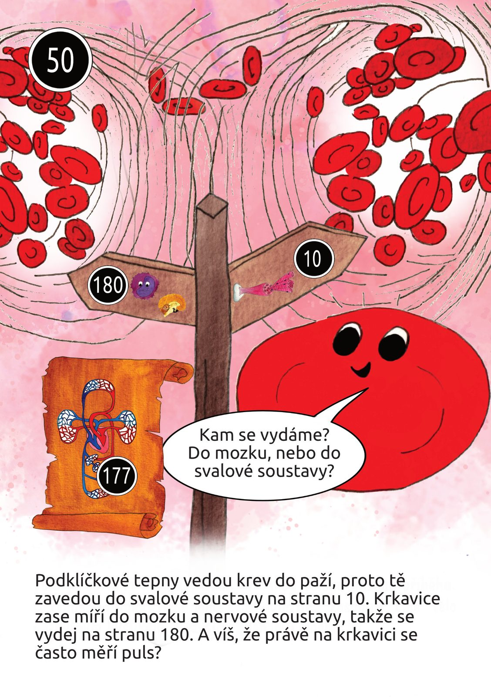
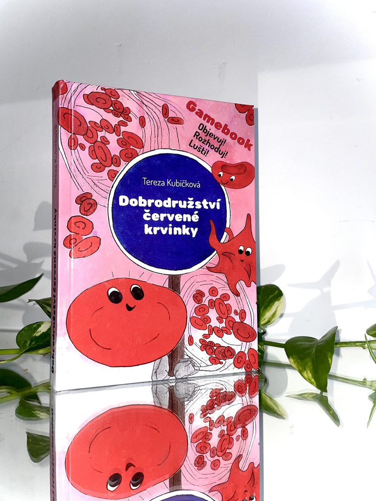
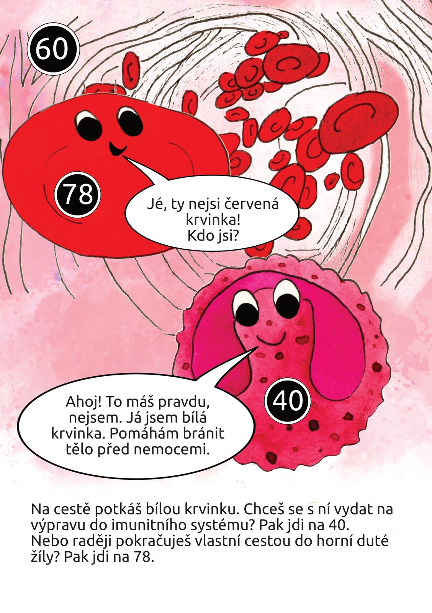

„Pokračuj na stranu 123.“
V obyčejné knize by vás taková věta naprosto zmátla. V gamebooku je to pozvánka. Dítě otočí na stranu 123, tam na něj čeká nová postava a další rozhodnutí.
Jestli hledáte knihu, u které nebudete dítě přemlouvat „ještě aspoň jednu stránku“, gamebook je dobrý tip. Baví i děti, které jinak čtou nerady.
Co je gamebook
Gamebook je kniha, ve které čtenář rozhoduje, kudy příběh půjde. Nečte se od první stránky po poslední. Na konci krátkého úseku přijde volba nebo úkol a podle výsledku čtenář přeskočí na jinou stranu. Jednou jde vlevo, podruhé vpravo, a pokaždé zažije trochu jiné dobrodružství.

Některé gamebooky jsou čistě příběhové. Jiné přidávají hádanky, šifry nebo počítání a správná odpověď otevře další cestu. Je to taková únikovka, která se vejde do školní tašky.
Proč gamebook baví i děti, které nečtou rády
Dítě je šéf. O tom, co se stane, rozhoduje samo. A kdo rozhodl, ten chce vědět, jak to dopadlo, takže čte dál.
Text přichází po kouscích. Místo dlouhé kapitoly je na stránce pár odstavců a pak akce. Děti, které se zaseknou u první hustě popsané strany, tady nemají čas se nudit.
Chyba není průšvih. Špatná odpověď v gamebooku znamená „vrať se a zkus to znovu“. Děti tak zkoušejí, přemýšlejí a nenápadně se učí.
Dá se číst znovu. Kniha má víc cest, takže gamebook nezapadne v knihovně po jednom večeru.
Jak vybrat gamebook pro děti
- Věk a čtenářská úroveň. Pro menší čtenáře se hodí krátké texty a hodně obrázků, starší zvládnou složitější hádanky. Vyplatí se podívat na věk, který uvádí nakladatel.
- Téma, které dítě chytí. Draci, vesmír, detektivka, nebo třeba vlastní tělo.
- Kolik je tam hraní. Nakladatelé často uvádějí, kolik hodin hra zabere nebo kolik má kniha rozcestí a úkolů.
- Sám, nebo s rodičem? Některé gamebooky dítě zvládne samo, jiné jsou zábavnější ve dvou. Společné luštění je dobrý program na zimní večery.
Gamebook o lidském těle: Dobrodružství červené krvinky

Hrdinkou gamebooku Dobrodružství červené krvinky je malá červená krvinka, která proplouvá cévami a navštěvuje plíce, mozek, játra i kosti. Po cestě potkává buňky, které tam pracují: bílou krvinku, krevní destičku, neuron, osteoblast nebo nefron.
Ahoj, tady Krvinka! V mozku mě neuron přivítal slovy „Ahoj! Jsem neuron, buňka nervové soustavy.“ A hned jsme spolu počítali neurony, aby signál dorazil tam, kam má. Kdo spočítá dobře, pokračuje. Kdo se splete, vrátí se a zkusí to znovu. Nikdo nepropadá, slibuju!
Co v knize čtenáře čeká
- 11 soustav lidského těla, od oběhové a dýchací přes nervovou a imunitní až po smysly a kostru,
- 13 křižovatek, na kterých čtenář rozhoduje, kam krvinka popluje,
- 14 tematických úkolů: hádanky, počítání nebo obrázkové sudoku,
- jednu velkou tajenku, do které se po cestě sbírají indicie a která prozradí cestu na poslední stránku,
- ručně malované akvarelové ilustrace.

Kniha má 252 stran v pevné vazbě a je pro děti od 8 do 12 let. Hraní zabere 6 až 12 hodin, takže vydrží na několik večerů.
Co říkají rodiče a prarodiče
„Krvinka je skvělá. Vnučka se u ní nejen bavila, ale úplně přirozeně se učila, jak funguje lidské tělo. Líbí se mi, že to není nudná učebnice. Obrázky jsou krásné.“
Tomáš Pospíšil
„Krvinka nás doma moc bavila. Líbilo se mi, že si děti samy vybírají, kudy se vydají dál, a že je příběh plný úkolů a objevování. Je to hezký způsob, jak trávit čas spolu.“
Kateřina Kroupová
„Krvinka zaujala i hyperaktivní dceru. I když jsme gamebook nakonec nedokončily, strávily jsme s ním po kouskách asi 2 měsíce. Dokáže si děti získat pro zájem o vlastní tělo a jak to v něm všechno funguje. Možná pomohlo, že dcery (ve věku 5 a 7 let) předtím byly fanynky seriálu Byl jednou jeden život. Díky gamebooku si znalosti ještě rozšířily a chtěly pak číst i další naučné encyklopedie o lidském těle.“
Iva Linhartová
Kdo knihu napsal. Tereza Kubíčková vystudovala molekulární biologii a genetiku a několik let pracovala jako embryoložka. Gamebook začala malovat na mateřské a přepisovala ho tak dlouho, až vzniklo šest verzí. Prvních pět odpočívá v šuplíku. Ta šestá se dostala do tisku.
Na příští rok chystá pokračování Hrášek a tajemství genetiky.
Kniha, nebo verze k tisku?
| Verze | Cena | Pro koho |
|---|---|---|
| Kniha, pevná vazba, 252 stran | 494 Kč | dárek, večerní čtení, knihovna |
| Digitální gamebook k tisku (PDF) | 349 Kč | kdo chce hned a vytiskne si sám |
| Výuková sada pro školy | podle velikosti třídy | učitelé přírodopisu a přírodovědy |
Gamebook pod stromeček
Knihy o lidském těle pro děti často skončí na polici. Gamebook se ale hraje, a dítě se u toho mimochodem dozví, co dělá neuron nebo k čemu jsou krevní destičky.
Aby kniha stihla dojít před Vánoci, objednejte ji do 18. prosince. Verzi k tisku máte hned a hodí se i jako dárek na poslední chvíli.
A pokud chcete s Krvinkou strávit i chvíli před spaním, na blogu najdete její pohádky z lidského těla.
Časté otázky
- Od kolika let je gamebook vhodný?
- Dobrodružství červené krvinky je pro děti od 8 do 12 let. Menší děti si ho užijí se čtoucím rodičem.
- Musí dítě číst samo?
- Nemusí. Gamebook je pro zvídavé děti i dospělé, takže se dá hrát i společně.
- Jak dlouho hraní trvá?
- Zhruba 6 až 12 hodin. Kdo zvolí jinou cestu, může hrát znovu.
- Existuje gamebook v PDF?
- Ano, jako digitální gamebook k tisku za 349 Kč.
- Hodí se gamebook do školy?
- Ano. Pro školy existuje výuková sada s metodikou, pracovními listy a výukovými kartami. Ukázkovou lekci o nervové soustavě si učitelé stáhnou zdarma, celou nabídku najdou v sekci Krvinka pro školy.